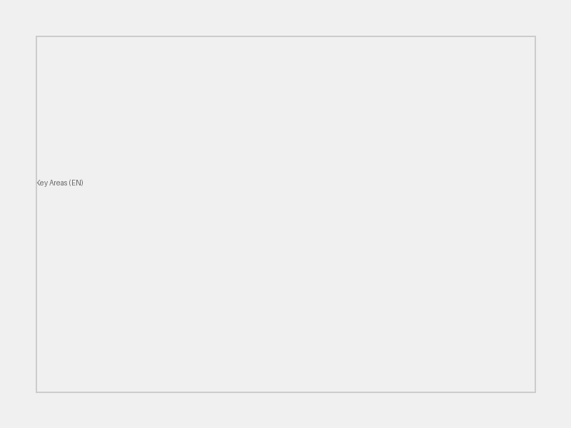
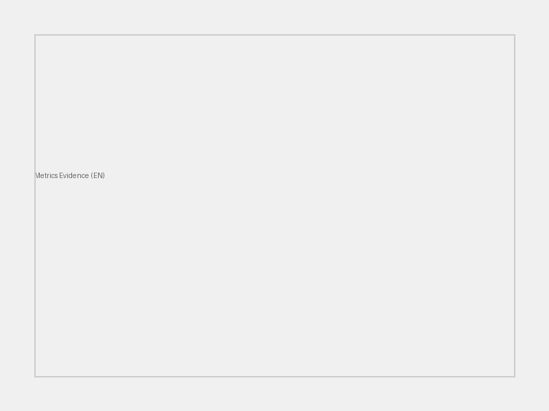

DRAFT / CONCEPT TEST - English Version
AI Multi-Modal Hub for Jingzhang Innovation Belt
Submission: vegetable-kun/jingzhang-mobility-hub
Status: DRAFT / CONCEPT TEST
Overview Map
Figure 1: Overview Map
Three-Level Scope
Figure 2: Three-Level Scope and Spatial Framework
Key Areas

Figure 3: Three Key Areas Index and Design Tasks
Mobility and Blue-Green Composite System
Figure 4: Mobility and Blue-Green Composite System
Core Metrics Recalculation and Evidence Chain

Figure 5: Core Metrics Recalculation and Evidence Chain
Draft version - full content to be completed